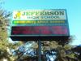

Education
-
Collected Links: Childcare cuts hurt homeless, why laying off teachers is bad and more reasons to bike
6/2/11, 11:17 a.m.
Collected links is an occasional post rounding up news about South L.A. from around the web.
-
COLUMN: City Year tutors get to know students in South L.A.
5/23/11, 9:02 a.m.
A City Year Corps member shares her experiences teaching in South L.A.
-
Budget cuts threaten Jefferson High's art, music and theater program
5/17/11, 3:43 p.m.
When she first arrived at Jefferson High School, History teacher Nicolle Fefferman recalls no music program. That changed four years ago once Edgar Torres, the only music teacher on campus, arrived. But the school spirit and pride that revitalized the students and life at Jefferson is now in jeopardy thanks to budget cuts and pink slips handed out to Torres and all other Art teachers.
-
Afterschool programs face uncertain future
5/13/11, 6 a.m.
Like many state-funded afterschool programs, Woodcraft Rangers provides some students at Carver with activities to keep them off the street. But while some programs are temporarily spared, some are on the chopping block.
-
Libraries offer free test prep classes
4/27/11, 5:47 a.m.
South Los Angeles students will get the opportunity to take up to date, practice SAT, PSAT and ACT exams for free through the Los Angeles Public Library and the Princeton Review. Their program, called Student Smart: Tools for Becoming a Better Student, is bringing free practice exams, sessions and seminars to students all over the city.
-
Behind the fence: The improvements of John Adams Middle School
4/25/11, 8:47 a.m.
Despite the looks of it, John Adams Middle School is quickly becoming one of the best middle schools in the state.
-
Former Compton powerhouse community college inaugurates hall of fame
4/25/11, 8:24 a.m.
Plenty of college athletic departments sponsor halls of fame. But the one that has just opened at the former Compton Community College is epic.
-
Real-world experience: Student chefs apprentice locally
4/14/11, 6 a.m.
Downtown's Patina restaurant is hosting a chef apprentice program for South L.A. youths. The apprentices will work in 3-month cycles, training in the Patina kitchen and learning firsthand what its like to work in an esteemed, professional kitchen. Patina's located in the Walt Disney Concert hall, and architectural landmark and home to the L.A. Philharmonic.
-
Thomas Jefferson students hand out reusable bags at Family Farms
4/13/11, 1:06 p.m.
The small act of handing out reusable bags changes a student's perspective.
-
Students learn teamwork and good eats at Santee
3/31/11, 2:40 p.m.
In the Culinary Arts program at the Santee Education Complex, students cook entire meals from scratch, study the logistics of running a restaurant, and learn nutrition can be delicious.
About Us
OnCentral is a site for the neighborhoods around Central Avenue. It's a news site where we not only provide information, but put the power of storytelling in your hands. Sign up and you can share your story or help an existing story grow by adding in your perspective or corrections.
Follow OnCentral


- Most Viewed
- Most Commented